AMIGO_PE Estimation of local unknowns
Contents
AMIGO_PE enables the possibility of computing local unknowns, i.e. experiment dependent parameters or initial conditions. User must select which parameters inputs.PEsol.id_local_theta{iexp} and/or initial conditions inputs.PEsol.id_local_theta_y0{iexp} are to be estimated for the experiment iexp. In addition maximum and minimum allowed values are required.
Example
% TITLE: The circadian clock in Arabidopsis thaliana

%============================ % RESULTS PATHS RELATED DATA %============================ inputs.pathd.results_folder='arabidopsis'; % Folder to keep results (in Results\) inputs.pathd.short_name='arabidopsis'; % Label to identify figures and reports %============================ % MODEL DEFINITION %============================ inputs.model.input_model_type='charmodelC'; % Model type- C inputs.model.n_st=7; % Number of states inputs.model.n_par=27; % Number of parameters inputs.model.n_stimulus=1; % Number of stimuli inputs.model.st_names=char('CL_m','CL_c',...% Names of the states 'CL_n','CT_m','CT_c','CT_n','CP_n'); inputs.model.par_names=char('n1','n2','g1','g2','m1','m2','m3','m4','m5','m6',... 'm7','k1','k2','k3','k4','k5','k6','k7','p1','p2',... 'p3','r1','r2','r3','r4','q1','q2'); % Names of the parameters inputs.model.stimulus_names=char('light'); % Names of the stimuli inputs.model.eqns=... % Model equations char('dCL_m=q1*CP_n*light+n1*CT_n/(g1+CT_n)-m1*CL_m/(k1+CL_m)',... 'dCL_c=p1*CL_m-r1*CL_c+r2*CL_n-m2*CL_c/(k2+CL_c)',... 'dCL_n=r1*CL_c-r2*CL_n-m3*CL_n/(k3+CL_n)',... 'dCT_m=n2*g2^2/(g2^2+CL_n^2)-m4*CT_m/(k4+CT_m)',... 'dCT_c=p2*CT_m-r3*CT_c+r4*CT_n-m5*CT_c/(k5+CT_c)',... 'dCT_n=r3*CT_c-r4*CT_n-m6*CT_n/(k6+CT_n)',... 'dCP_n=(1-light)*p3-m7*CP_n/(k7+CP_n)-q2*light*CP_n');
IMPORTANT:
User may select any customised name but: n, t, u, y, ydot, par, tlast, told, pend and v which are reserved words
inputs.model.par=[7.5038 0.6801 1.4992 3.0412 10.0982... % Nominal parameter 1.9685 3.7511 2.3422 7.2482 1.8981 1.2 3.8045... % values 5.3087 4.1946 2.5356 1.4420 4.8600 1.2 2.1994... 9.4440 0.5 0.2817 0.7676 0.4364 7.3021 4.5703 1.0]; %============================================ % EXPERIMENTAL SCHEME (SIMULATION CONDITIONS) %============================================ inputs.exps.n_exp=2; % Number of experiments % EXPERIMENT 1 inputs.exps.exp_y0{1}=[0 0 0 0 0 0 0]; % Initial conditions inputs.exps.t_f{1}=120; % Experiments duration inputs.exps.n_obs{1}=2; % Number of observables inputs.exps.obs_names{1}=char('Lum','mRNAa'); % Names of the observables inputs.exps.obs{1}=char('Lum=CL_m',... % Observation function 'mRNAa=CT_m'); inputs.exps.u_interp{1}='sustained'; % Stimuli definition for experiment 1 inputs.exps.t_con{1}=[0 120]; % Input swithching times including: % Initial and final time inputs.exps.u{1}=1; % Values of the inputs for exp 1 inputs.exps.n_s{1}=15; % Number of sampling times % EXPERIMENT 2 inputs.exps.exp_y0{2}=[0 0 0 0 0 0 0]; % Initial conditions inputs.exps.t_f{2}=120; % Experiments duration inputs.exps.n_obs{2}=2; % Number of observables inputs.exps.obs_names{2}=char('Lum','mRNAa'); % Names of the observables inputs.exps.obs{2}=char('Lum=CL_m',... % Observation function 'mRNAa=CT_m'); inputs.exps.u_interp{2}='pulse-down'; % Stimuli definition for experiment 2 inputs.exps.n_pulses{2}=5; % Number of pulses inputs.exps.u_min{2}=0; % Minimum and maximum of inputs inputs.exps.u_max{2}=1; inputs.exps.t_con{2}=0:12:120; % Input switching times inputs.exps.n_s{2}=25; % Number of sampling times %================================== % EXPERIMENTAL DATA RELATED INFO %================================== % EXPERIMENT 1 inputs.exps.data_type='real'; % Type of data inputs.exps.exp_data{1}=[ % Matrix of ns{iexp} x n_obs{iexp} 0.037642 0.059832 % with experimental data 1.398618 0.983442 1.606762 0.433379 0.265345 0.628819 1.417288 0.858973 1.381613 0.496637 0.504584 0.717923 1.240249 0.862584 1.180193 0.634508 0.775945 0.679648 1.514514 0.735783 0.904653 0.593644 0.753736 0.759013 1.389312 0.678665 0.833228 0.574736 ]; inputs.exps.error_data{1}=[ % Matrix of ns{iexp} x n_obs{iexp} 0.037642 0.059832 % with experimental error 0.072461 0.013999 0.002877 0.020809 0.050324 0.002705 0.042936 0.017832 0.044338 0.022538 0.016335 0.017981 0.164745 0.035301 0.010631 0.102381 0.127745 0.065791 0.081671 0.049568 0.126739 0.050306 0.006308 0.018894 0.054665 0.066953 0.082163 0.015295 ]; % EXPERIMENT 2 inputs.exps.exp_data{2}=[ 0.146016 0.018152 0.831813 1.002499 1.874870 0.816779 1.927580 0.544111 1.139536 0.354476 0.876938 0.520424 0.559600 0.802322 1.273548 0.939453 1.696482 0.687495 1.065496 0.577896 0.847460 0.524076 0.517520 0.738095 1.162232 0.826737 1.421504 0.779833 1.340639 0.550493 0.563822 0.515605 0.402755 0.714877 1.029856 0.871118 1.490741 0.840174 1.580873 0.692047 0.696610 0.459481 0.141546 0.646803 0.804194 0.925806 1.622378 0.824711 1.525194 0.537398 ]; inputs.exps.error_data{2}=[ 0.146016 0.018152 0.066547 0.045194 0.184009 0.101495 0.047431 0.030858 0.175280 0.033712 0.031945 0.048733 0.107148 0.008715 0.019847 0.072804 0.111892 0.001840 0.104932 0.058752 0.059721 0.033324 0.056537 0.000360 0.051815 0.037473 0.103393 0.028094 0.008084 0.012024 0.188444 0.022982 0.046354 0.031981 0.043436 0.003749 0.030177 0.042560 0.116245 0.110535 0.059345 0.025112 0.218587 0.000564 0.115783 0.043708 0.099239 0.002678 0.010644 0.052990 ]; %================================== % UNKNOWNS RELATED DATA %================================== % Select the GLOBAL parameters/initial conditions to be considered by PE inputs.PEsol.id_global_theta=char('n1','n2','m1','m4','m6','m7','k1','k4','p3'); % 'all'|User selected % In order to use AMIGO_PE you need to specify upper and lower % bounds on the parameters. An initial guess is optional. inputs.PEsol.global_theta_max=20.*ones(1,9); inputs.PEsol.global_theta_min=0.01.*ones(1,9); % Select the LOCAL parameters/initial conditions to be considered by PE inputs.PEsol.id_local_theta_y0{1}=char('CL_c','CP_n'); inputs.PEsol.local_theta_y0_max{1}=[1 1]; inputs.PEsol.local_theta_y0_min{1}=[0 0]; inputs.PEsol.local_theta_y0_guess{1}=[0.5 0.5]; inputs.PEsol.id_local_theta_y0{2}=char('CL_c','CP_n'); inputs.PEsol.local_theta_y0_max{2}=[1 1]; inputs.PEsol.local_theta_y0_min{2}=[0 0]; inputs.PEsol.local_theta_y0_guess{2}=[0.5 0.5]; %============================================================= % COST FUNCTION RELATED DATA % SOLVING THE PROBLEM WITH WEIGHTED LEAST SQUARES FUNCTION %============================================================= inputs.PEsol.PEcost_type='lsq'; % 'lsq' (weighted least squares default) inputs.PEsol.lsq_type='Q_I'; % Weights: % Q_I: identity matrix; Q_expmax: maximum experimental data % Q_expmean: mean experimental data; % Q_mat: user selected weighting matrix %================================== % NUMERICAL METHDOS RELATED DATA %================================== % SIMULATION % Default for charmodel C: CVODES % OPTIMIZATION inputs.nlpsol.nlpsolver='ess'; % In this case the problem will be solved with eSS inputs.nlpsol.eSS.maxeval=10000; % Maximum number of function evaluations inputs.nlpsol.eSS.maxtime=300; % Maximum allowed time in s for eSS inputs.nlpsol.eSS.local.solver='nl2sol'; % Local solver in eSS - recommended for PE inputs.nlpsol.eSS.local.iterprint=0; % Do not print intermediate results
More information regarding the inputs used in this example can be found here.
%============================================================= % COST FUNCTION RELATED DATA % SOLVING THE PROBLEM WITH LOG-LIKELIHOOD CASE %============================================================= inputs.PEsol.PEcost_type='llk'; % 'lsq' (weighted least squares default) inputs.PEsol.llk_type='homo_var'; % 'homo_var' or 'homo': known error_data %================================== % NUMERICAL METHDOS RELATED DATA %================================== % SIMULATION % Default for charmodel C: CVODES % OPTIMIZATION inputs.nlpsol.nlpsolver='ess'; % In this case the problem will be solved with eSS inputs.nlpsol.eSS.maxeval=10000; % Maximum number of function evaluations inputs.nlpsol.eSS.maxtime=600; % Maximum allowed time in s for eSS inputs.nlpsol.eSS.local.solver='nl2sol'; % Local solver in eSS - recommended for PE inputs.nlpsol.eSS.local.iterprint=0; % Do not print intermediate results
More information regarding the inputs used in this example can be found here.
%==================================================== % CALL AMIGO2 from COMMAND LINE - LOG-LIKELIHOOD CASE %==================================================== % It is recommended to keep all inputs in a 'problem_file'.m. % AMIGO2 PE task can be called as follows: % AMIGO_PE('problem_file','run_ident') or AMIGO_ContourP(inputs) AMIGO_Prep(inputs); AMIGO_PE(inputs);
***********************************
AMIGO2, Copyright @CSIC
AMIGO2_R2016a [Oct 2015]
***********************************
*Date: 27-Jan-2016
------>Pre processing....this may take a few seconds.
------>Checking inputs....
------> WARNING message
AMIGO_check_model: You did not specify inputs.model.exe_type, standard will be assumed
Warning: AMIGO_check_IVPsolver: Changing ivp solver to the only option
compatible with charmodelC, cvodes
Warning: AMIGO_check_IVPsolver: Changing sensitivities solver to, cvodes
------> Generating C code ...
------> Mexing files....
Building with 'MinGW64 Compiler (C)'.
D:\AMIGO2_REPO_2014\AMIGO2R2016\Kernel\IVP_solvers\cvodes\C_src4Amigo\src\src_amigo\simulate_amigo_model.c: In function 'simulate_amigo_model':
D:\AMIGO2_REPO_2014\AMIGO2R2016\Kernel\IVP_solvers\cvodes\C_src4Amigo\src\src_amigo\simulate_amigo_model.c:330:16: warning: passing argument 1 of 'mexPrintf' from incompatible pointer type
mexPrintf(stderr,"\nSolver failed at flag = CVode(cvode_mem, tout, y, &t, CV_TSTOP_RETURN);. . .\n");
^
In file included from D:\AMIGO2_REPO_2014\AMIGO2R2016\Kernel\IVP_solvers\cvodes\C_src4Amigo\include\include_amigo/simulate_amigo_model.h:4:0,
from D:\AMIGO2_REPO_2014\AMIGO2R2016\Kernel\IVP_solvers\cvodes\C_src4Amigo\src\src_amigo\simulate_amigo_model.c:1:
C:\MATLAB_R2015b_64/extern/include/mex.h:202:27: note: expected 'const char *' but argument is of type 'struct FILE *'
LIBMWMEX_API_EXTERN_C int mexPrintf(
^
D:\AMIGO2_REPO_2014\AMIGO2R2016\Kernel\IVP_solvers\cvodes\C_src4Amigo\src\src_interface\interface_with_matlab.c: In function 'mexFunction':
D:\AMIGO2_REPO_2014\AMIGO2R2016\Kernel\IVP_solvers\cvodes\C_src4Amigo\src\src_interface\interface_with_matlab.c:200:17: warning: assignment from incompatible pointer type
stats_struct = mxGetPr(plhs[5]);
^
MEX completed successfully.
------>Files generated....
***********************************
AMIGO2, Copyright @CSIC
AMIGO2_R2016a [Oct 2015]
***********************************
*Date: 27-Jan-2016
------>Checking inputs....
------> WARNING message
AMIGO_check_model: You did not specify inputs.model.exe_type, standard will be assumed
Warning: AMIGO_check_IVPsolver: Changing ivp solver to the only option
compatible with charmodelC, cvodes
Warning: AMIGO_check_IVPsolver: Changing sensitivities solver to, cvodes
------> WARNING message
You have not provided the sampling times.
Equidistant sampling will be assumed for experiment 1
Note however that you may modify your input file by adding
inputs.exps.t_s{iexp}
------> WARNING message
You have not provided the sampling times.
Equidistant sampling will be assumed for experiment 2
Note however that you may modify your input file by adding
inputs.exps.t_s{iexp}
------> WARNING message
Error_data is detected for each experiment, the estimation problem
is modified to heteroscedastic LLK with known variance.
*************************************************************************
------>IMPORTANT!!: Most of the optimization solvers have their own
tunning parameters (options).
Defaults have been assigned in the *NLPsolver*_options
files. You may need to modify those settings for your
particular problem, specially:
- maximum number of function evaluations /iterations,
- maximum computational time
******************************************************************
Solving the NLP problem with
>Summary of selected eSS options:
ess_options.
combination: 1
delete: 'standard'
dim_refset: 'auto'
diverse_criteria: 1
initiate: 1
intens: 10
inter_save: 0
iterprint: 1
local: (1x1 struct)
log_var: []
maxeval: 10000
maxtime: 600
n_stuck: 0
ndiverse: 'auto'
plot: 0
prob_bound: 0.5
regenerate: 3
strategy: 0
tolc: 1e-05
tolf: 0.0001
tolx: 0.001
weight: 1000000
nl2sol_settings.
display: 1
grad: 'internalFD'
iterfun: []
maxfeval: 550
maxiter: 500
objrtol: 1e-05
tolafun: 1e-06
tolrfun: 1e-06
>Bounds on the unknowns:
v_guess(1)=10.005000; v_min(1)=0.010000; v_max(1)=20.000000;
v_guess(2)=10.005000; v_min(2)=0.010000; v_max(2)=20.000000;
v_guess(3)=10.005000; v_min(3)=0.010000; v_max(3)=20.000000;
v_guess(4)=10.005000; v_min(4)=0.010000; v_max(4)=20.000000;
v_guess(5)=10.005000; v_min(5)=0.010000; v_max(5)=20.000000;
v_guess(6)=10.005000; v_min(6)=0.010000; v_max(6)=20.000000;
v_guess(7)=10.005000; v_min(7)=0.010000; v_max(7)=20.000000;
v_guess(8)=10.005000; v_min(8)=0.010000; v_max(8)=20.000000;
v_guess(9)=10.005000; v_min(9)=0.010000; v_max(9)=20.000000;
v_guess(10)=0.500000; v_min(10)=0.000000; v_max(10)=1.000000;
v_guess(11)=0.500000; v_min(11)=0.000000; v_max(11)=1.000000;
v_guess(12)=0.500000; v_min(12)=0.000000; v_max(12)=1.000000;
v_guess(13)=0.500000; v_min(13)=0.000000; v_max(13)=1.000000;
------------------------------------------------------------------------------
eSS R2010B - Enhanced Scatter Search
<c> IIM-CSIC, Vigo, Spain - email: gingproc@iim.csic.es
------------------------------------------------------------------------------
Refset size automatically calculated: 12
Number of diverse solutions automatically calculated: 130
-----------------------------------------------
Initial value problem related active settings
-----------------------------------------------
ivpsolver: cvodes
RelTol: 1e-05
AbsTol: 1e-07
MaxStepSize: Inf
MaxNumberOfSteps: 100000
Initial Pop: NFunEvals: 138 Bestf: 399476 CPUTime: 1.060807 Var: 2.37876e+23
Iteration: 1 NFunEvals: 285 Bestf: 101901 CPUTime: 1.918812 Var: 8.41527e+12
Call local solver: NL2SOL
Initial point function value: 101900.579371
------------------------------------------------------------------
This is DN2FB (NL2SNO v2.3)
Authors: John Dennis, David Gay, Roy Welsch
MEX Interface J. Currie 2012
Problem Properties:
# Decision Variables: 13
# Data Points: 80
------------------------------------------------------------------
*** TERMINATION: EARLY EXIT ***
*** CAUSE: false convergence. the iterates appear to be converging to a noncritical point. this may mean that the convergence tolerances are too small ***
------------------------------------------------------------------
NL2SOL ended after 17 iteration and 271 function evaluation:
Results: False convergence
Local solution function value: 951.983
Number of function evaluations in the local search: 273
CPU Time of the local search: 1.322518 seconds
Iteration: 2 NFunEvals: 703 Bestf: 951.983 CPUTime: 4.024826 Var: 1.4022e+11
Iteration: 3 NFunEvals: 848 Bestf: 951.983 CPUTime: 4.726830 Var: 7.95516e+09
Iteration: 4 NFunEvals: 990 Bestf: 951.983 CPUTime: 5.413235 Var: 2.69774e+09
Iteration: 5 NFunEvals: 1134 Bestf: 951.983 CPUTime: 6.099639 Var: 1.06223e+09
Iteration: 6 NFunEvals: 1275 Bestf: 951.983 CPUTime: 6.770443 Var: 1.0741e+09
Iteration: 7 NFunEvals: 1413 Bestf: 951.983 CPUTime: 7.410047 Var: 9.86959e+08
Iteration: 8 NFunEvals: 1552 Bestf: 951.983 CPUTime: 8.080852 Var: 1.06898e+08
Iteration: 9 NFunEvals: 1692 Bestf: 951.983 CPUTime: 8.751656 Var: 1.20918e+07
Iteration: 10 NFunEvals: 1831 Bestf: 951.983 CPUTime: 9.438060 Var: 8.09658e+06
Iteration: 11 NFunEvals: 1971 Bestf: 951.983 CPUTime: 10.108865 Var: 6.36329e+06
Call local solver: NL2SOL
Initial point function value: 3089.456410
------------------------------------------------------------------
This is DN2FB (NL2SNO v2.3)
Authors: John Dennis, David Gay, Roy Welsch
MEX Interface J. Currie 2012
Problem Properties:
# Decision Variables: 13
# Data Points: 80
------------------------------------------------------------------
*** TERMINATION: EARLY EXIT ***
*** CAUSE: false convergence. the iterates appear to be converging to a noncritical point. this may mean that the convergence tolerances are too small ***
------------------------------------------------------------------
NL2SOL ended after 32 iteration and 482 function evaluation:
Results: False convergence
Local solution function value: 769.179
Number of function evaluations in the local search: 484
CPU Time of the local search: 2.283395 seconds
Iteration: 12 NFunEvals: 2595 Bestf: 769.179 CPUTime: 13.104084 Var: 2.05807e+06
Iteration: 13 NFunEvals: 2734 Bestf: 769.179 CPUTime: 13.790488 Var: 2.0738e+06
Iteration: 14 NFunEvals: 2871 Bestf: 769.179 CPUTime: 14.430092 Var: 1.82631e+06
Iteration: 15 NFunEvals: 3005 Bestf: 769.179 CPUTime: 15.054096 Var: 1.78888e+06
Iteration: 16 NFunEvals: 3139 Bestf: 769.179 CPUTime: 15.662500 Var: 1.79406e+06
Iteration: 17 NFunEvals: 3275 Bestf: 769.179 CPUTime: 16.302104 Var: 1.7993e+06
Iteration: 18 NFunEvals: 3408 Bestf: 769.179 CPUTime: 16.941709 Var: 1.80142e+06
Iteration: 19 NFunEvals: 3541 Bestf: 769.179 CPUTime: 17.565713 Var: 1.80685e+06
Iteration: 20 NFunEvals: 3675 Bestf: 769.179 CPUTime: 18.205317 Var: 1.79959e+06
Iteration: 21 NFunEvals: 3811 Bestf: 769.179 CPUTime: 18.844921 Var: 1.85799e+06
Call local solver: NL2SOL
Initial point function value: 1523.780617
------------------------------------------------------------------
This is DN2FB (NL2SNO v2.3)
Authors: John Dennis, David Gay, Roy Welsch
MEX Interface J. Currie 2012
Problem Properties:
# Decision Variables: 13
# Data Points: 80
------------------------------------------------------------------
*** TERMINATION: EARLY EXIT ***
*** CAUSE: false convergence. the iterates appear to be converging to a noncritical point. this may mean that the convergence tolerances are too small ***
------------------------------------------------------------------
NL2SOL ended after 36 iteration and 555 function evaluation:
Results: False convergence
Local solution function value: 813.657
Number of function evaluations in the local search: 557
CPU Time of the local search: 2.640775 seconds
Iteration: 22 NFunEvals: 4504 Bestf: 769.179 CPUTime: 22.152142 Var: 2.95219e+09
Iteration: 23 NFunEvals: 4637 Bestf: 769.179 CPUTime: 22.791746 Var: 4.88637e+08
Iteration: 24 NFunEvals: 4770 Bestf: 769.179 CPUTime: 23.415750 Var: 9.38744e+07
Iteration: 25 NFunEvals: 4904 Bestf: 769.179 CPUTime: 24.086554 Var: 7.66582e+07
Iteration: 26 NFunEvals: 5039 Bestf: 769.179 CPUTime: 24.726158 Var: 1.85521e+07
Iteration: 27 NFunEvals: 5176 Bestf: 769.179 CPUTime: 25.365763 Var: 4.36942e+11
Iteration: 28 NFunEvals: 5311 Bestf: 769.179 CPUTime: 26.020967 Var: 4.57998e+08
Iteration: 29 NFunEvals: 5443 Bestf: 769.179 CPUTime: 26.707371 Var: 4.57998e+08
Iteration: 30 NFunEvals: 5577 Bestf: 769.179 CPUTime: 27.393776 Var: 9.88556e+07
Iteration: 31 NFunEvals: 5711 Bestf: 769.179 CPUTime: 28.033380 Var: 2.31076e+06
Call local solver: NL2SOL
Initial point function value: 1446.046293
------------------------------------------------------------------
This is DN2FB (NL2SNO v2.3)
Authors: John Dennis, David Gay, Roy Welsch
MEX Interface J. Currie 2012
Problem Properties:
# Decision Variables: 13
# Data Points: 80
------------------------------------------------------------------
*** TERMINATION: EARLY EXIT ***
*** CAUSE: false convergence. the iterates appear to be converging to a noncritical point. this may mean that the convergence tolerances are too small ***
------------------------------------------------------------------
NL2SOL ended after 35 iteration and 528 function evaluation:
Results: False convergence
Local solution function value: 659.174
Number of function evaluations in the local search: 530
CPU Time of the local search: 2.540723 seconds
Iteration: 32 NFunEvals: 6377 Bestf: 659.174 CPUTime: 31.200200 Var: 4.76962e+12
Iteration: 33 NFunEvals: 6513 Bestf: 659.174 CPUTime: 31.871004 Var: 1.66443e+10
Iteration: 34 NFunEvals: 6650 Bestf: 659.174 CPUTime: 32.573009 Var: 469764
Iteration: 35 NFunEvals: 6786 Bestf: 659.174 CPUTime: 33.212613 Var: 37463.7
Iteration: 36 NFunEvals: 6919 Bestf: 659.174 CPUTime: 33.852217 Var: 37677.6
Iteration: 37 NFunEvals: 7055 Bestf: 659.174 CPUTime: 34.476221 Var: 35863.5
Iteration: 38 NFunEvals: 7191 Bestf: 659.174 CPUTime: 35.131425 Var: 12402.6
Iteration: 39 NFunEvals: 7325 Bestf: 659.174 CPUTime: 35.771029 Var: 11798.3
Iteration: 40 NFunEvals: 7465 Bestf: 659.174 CPUTime: 36.441834 Var: 11568.5
Iteration: 41 NFunEvals: 7600 Bestf: 659.174 CPUTime: 37.097038 Var: 1.46171e+10
Call local solver: NL2SOL
Initial point function value: 1493.260459
------------------------------------------------------------------
This is DN2FB (NL2SNO v2.3)
Authors: John Dennis, David Gay, Roy Welsch
MEX Interface J. Currie 2012
Problem Properties:
# Decision Variables: 13
# Data Points: 80
------------------------------------------------------------------
*** TERMINATION: EARLY EXIT ***
*** CAUSE: false convergence. the iterates appear to be converging to a noncritical point. this may mean that the convergence tolerances are too small ***
------------------------------------------------------------------
NL2SOL ended after 22 iteration and 347 function evaluation:
Results: False convergence
Local solution function value: 640.927
Number of function evaluations in the local search: 349
CPU Time of the local search: 1.635696 seconds
Iteration: 42 NFunEvals: 8092 Bestf: 640.927 CPUTime: 39.421453 Var: 4.5795e+12
Iteration: 43 NFunEvals: 8230 Bestf: 640.927 CPUTime: 40.076657 Var: 3.71704e+10
Iteration: 44 NFunEvals: 8365 Bestf: 640.927 CPUTime: 40.731861 Var: 4.58868e+08
Iteration: 45 NFunEvals: 8501 Bestf: 640.927 CPUTime: 41.387065 Var: 1.11351e+08
Iteration: 46 NFunEvals: 8637 Bestf: 640.927 CPUTime: 42.026669 Var: 1.00964e+06
Iteration: 47 NFunEvals: 8772 Bestf: 640.927 CPUTime: 42.666273 Var: 755760
Iteration: 48 NFunEvals: 8911 Bestf: 640.927 CPUTime: 43.368278 Var: 241433
Iteration: 49 NFunEvals: 9051 Bestf: 640.927 CPUTime: 44.054682 Var: 11511.1
Iteration: 50 NFunEvals: 9186 Bestf: 640.927 CPUTime: 44.678686 Var: 11902
Iteration: 51 NFunEvals: 9319 Bestf: 640.927 CPUTime: 45.302690 Var: 12018.5
Call local solver: NL2SOL
Initial point function value: 3068.979795
------------------------------------------------------------------
This is DN2FB (NL2SNO v2.3)
Authors: John Dennis, David Gay, Roy Welsch
MEX Interface J. Currie 2012
Problem Properties:
# Decision Variables: 13
# Data Points: 80
------------------------------------------------------------------
*** TERMINATION: EARLY EXIT ***
*** CAUSE: false convergence. the iterates appear to be converging to a noncritical point. this may mean that the convergence tolerances are too small ***
------------------------------------------------------------------
NL2SOL ended after 10 iteration and 167 function evaluation:
Results: False convergence
Local solution function value: 696.781
Number of function evaluations in the local search: 169
CPU Time of the local search: 0.796762 seconds
Iteration: 52 NFunEvals: 9624 Bestf: 640.927 CPUTime: 46.753500 Var: 12165.3
Iteration: 53 NFunEvals: 9760 Bestf: 640.927 CPUTime: 47.408704 Var: 12206.9
Iteration: 54 NFunEvals: 9894 Bestf: 640.927 CPUTime: 48.048308 Var: 12731.9
Iteration: 55 NFunEvals: 10029 Bestf: 640.927 CPUTime: 48.687912 Var: 4.00428e+11
Final local refinement with: NL2SOL
Initial point function value: 640.927354
------------------------------------------------------------------
This is DN2FB (NL2SNO v2.3)
Authors: John Dennis, David Gay, Roy Welsch
MEX Interface J. Currie 2012
Problem Properties:
# Decision Variables: 13
# Data Points: 80
------------------------------------------------------------------
*** TERMINATION: EARLY EXIT ***
*** CAUSE: false convergence. the iterates appear to be converging to a noncritical point. this may mean that the convergence tolerances are too small ***
------------------------------------------------------------------
NL2SOL ended after 5 iteration and 89 function evaluation:
Results: False convergence
Local solution function value: 636.194320
Number of function evaluations in the local search: 91
CPU Time of the local search: 0.419719 seconds
Maximum number of function evaluations achieved
Best solution value 636.194
Decision vector
3.11626
0.894254
6.66668
14.0983
3.76703
9.53346
8.19212
14.982
4.49469
1
0.998651
0.00148444
0.00160184
CPU time 49.1247
Number of function evaluations 10121
------> Computing Correlation Matrix for unknowns...
---------------------------------------------------
Local sensitivity problem related active settings
---------------------------------------------------
senssolver: cvodes
ivp_RelTol: 1e-05
ivp_AbsTol: 1e-07
sens_RelTol: ~1e-05
sensmex: cvodesg_arabidopsis
MaxStepSize: Inf
MaxNumberOfSteps: 100000
sens_RelTol: ~1e-05
------> Warning message
The Fisher Information Matrix is singular
The reduced Fisher Information Matrix is computed.
<strong>
----------------------------------------------------------</strong><strong>
------> WARNING message
</strong><strong> The Fisher Information Matrix is nearly singular.
</strong><strong>----------------------------------------------------------
</strong>Warning: Matrix is close to singular or badly scaled. Results may be inaccurate.
RCOND = 4.378281e-17.
--------------------------------------------------------------------------
Experiment 1:
inputs.exp_data{1}=[
0.037642 0.059832
1.39862 0.983442
1.60676 0.433379
0.265345 0.628819
1.41729 0.858973
1.38161 0.496637
0.504584 0.717923
1.24025 0.862584
1.18019 0.634508
0.775945 0.679648
1.51451 0.735783
0.904653 0.593644
0.753736 0.759013
1.38931 0.678665
0.833228 0.574736
];
Experiment 2:
inputs.exp_data{2}=[
0.146016 0.018152
0.831813 1.0025
1.87487 0.816779
1.92758 0.544111
1.13954 0.354476
0.876938 0.520424
0.5596 0.802322
1.27355 0.939453
1.69648 0.687495
1.0655 0.577896
0.84746 0.524076
0.51752 0.738095
1.16223 0.826737
1.4215 0.779833
1.34064 0.550493
0.563822 0.515605
0.402755 0.714877
1.02986 0.871118
1.49074 0.840174
1.58087 0.692047
0.69661 0.459481
0.141546 0.646803
0.804194 0.925806
1.62238 0.824711
1.52519 0.537398
];
Error data 1:
inputs.exps.error_data{1}=[
0.037642 0.059832
0.072461 0.013999
0.002877 0.020809
0.050324 0.002705
0.042936 0.017832
0.044338 0.022538
0.016335 0.017981
0.164745 0.035301
0.010631 0.102381
0.127745 0.065791
0.081671 0.049568
0.126739 0.050306
0.006308 0.018894
0.054665 0.066953
0.082163 0.015295
];
Error data 2:
inputs.exps.error_data{2}=[
0.146016 0.018152
0.066547 0.045194
0.184009 0.101495
0.047431 0.030858
0.17528 0.033712
0.031945 0.048733
0.107148 0.008715
0.019847 0.072804
0.111892 0.00184
0.104932 0.058752
0.059721 0.033324
0.056537 0.00036
0.051815 0.037473
0.103393 0.028094
0.008084 0.012024
0.188444 0.022982
0.046354 0.031981
0.043436 0.003749
0.030177 0.04256
0.116245 0.110535
0.059345 0.025112
0.218587 0.000564
0.115783 0.043708
0.099239 0.002678
0.010644 0.05299
];
---------------------------------------------------------------------------------------------
>>>> Mean / Maximum value of the residuals in percentage (100*(data-model)/data):
Experiment 1 :
Observable 1 --> mean error: 19.366804 % max error: 100.000000 %
Observable 2 --> mean error: 11.765256 % max error: 100.000000 %
Experiment 2 :
Observable 1 --> mean error: 28.667470 % max error: 264.261231 %
Observable 2 --> mean error: 9.759105 % max error: 100.000000 %
--------------------------------------------------------------------------
--------------------------------------------------------------------
>>>> Maximum absolute value of the residuals (data-model):
Experiment 1 :
Observable 1 --> max residual: 0.276249 max data: 1.606762
Observable 2 --> max residual: 0.076890 max data: 0.983442
Experiment 2 :
Observable 1 --> max residual: 0.434428 max data: 1.927580
Observable 2 --> max residual: 0.095952 max data: 1.002499
--------------------------------------------------------------------------
>>>> Best objective function: 636.194320
>>>> Computational cost: 49.124715 s
> 100.00% of successful simulationn
> 100.00% of successful sensitivity calculations
>>> Best values found and the corresponding asymptotic confidence intervals
>>> Estimated global parameters:
n1 : 3.1163e+00 +- 5.0775e-01 ( 16.3%);
n2 : 8.9425e-01 +- 6.6725e-02 ( 7.46%);
m1 : 6.6667e+00 +- 1.5037e+00 ( 22.6%);
m4 : 1.4098e+01 +- 8.3507e+00 ( 59.2%);
m6 : 3.7670e+00 +- 9.4633e-01 ( 25.1%);
m7 : 9.5335e+00 +- 5.4193e+00 ( 56.8%);
k1 : 8.1921e+00 +- 3.8512e+00 ( 47%);
k4 : 1.4982e+01 +- 1.0006e+01 ( 66.8%);
p3 : 4.4947e+00 +- 3.5070e+00 ( 78%);
>>> Estimated local initial conditions:
Experiment 1, CL_c : 1.0000e+00 +- 2.2878e+00 (2.29e+02%); (active bound)
Experiment 1, CP_n : 9.9865e-01 +- 3.7303e-01 (3.74e+01%);
Experiment 2, CL_c : 1.4844e-03 +- 7.4749e-01 (5.04e+04%);
Experiment 2, CP_n : 1.6018e-03 +- 1.3975e-01 (8.72e+03%);
>>> Correlation matrix for the global unknowns:
1.000000e+00 -5.520682e-01 -6.744649e-01 5.220841e-01 -9.131371e-01 -1.063927e-01 -9.113795e-01 5.417925e-01 -7.578700e-03
-5.520682e-01 1.000000e+00 4.476646e-01 -5.608096e-01 1.935807e-01 7.662930e-01 4.903741e-01 -6.374490e-01 7.133427e-01
-6.744649e-01 4.476646e-01 1.000000e+00 -6.516145e-01 5.777384e-01 1.635193e-02 9.142358e-01 -6.464334e-01 -4.821052e-02
5.220841e-01 -5.608096e-01 -6.516145e-01 1.000000e+00 -3.354933e-01 -4.861740e-01 -6.098862e-01 9.952730e-01 -4.436881e-01
-9.131371e-01 1.935807e-01 5.777384e-01 -3.354933e-01 1.000000e+00 -1.881983e-01 8.367883e-01 -3.247847e-01 -2.780356e-01
-1.063927e-01 7.662930e-01 1.635193e-02 -4.861740e-01 -1.881983e-01 1.000000e+00 5.766118e-03 -5.484361e-01 9.949221e-01
-9.113795e-01 4.903741e-01 9.142358e-01 -6.098862e-01 8.367883e-01 5.766118e-03 1.000000e+00 -6.129690e-01 -8.322530e-02
5.417925e-01 -6.374490e-01 -6.464334e-01 9.952730e-01 -3.247847e-01 -5.484361e-01 -6.129690e-01 1.000000e+00 -5.035848e-01
-7.578700e-03 7.133427e-01 -4.821052e-02 -4.436881e-01 -2.780356e-01 9.949221e-01 -8.322530e-02 -5.035848e-01 1.000000e+00
>>> Correlation matrix for the experiment 1
1.000000e+00 -1.142411e-01 -2.686446e-01 -1.811336e-02 -8.648904e-01 -5.335560e-02 -9.452666e-01 2.031054e-03 0.000000e+00 5.549620e-02 -5.343083e-02
-1.142411e-01 1.000000e+00 3.512259e-01 -7.730865e-01 -3.771625e-01 -2.095530e-02 1.030806e-01 -8.385267e-01 0.000000e+00 2.788387e-02 -2.128381e-02
-2.686446e-01 3.512259e-01 1.000000e+00 -7.072846e-01 1.605863e-01 6.405192e-01 5.478832e-01 -6.650529e-01 0.000000e+00 -6.385648e-01 6.404258e-01
-1.811336e-02 -7.730865e-01 -7.072846e-01 1.000000e+00 3.177022e-01 -4.652477e-01 -1.380381e-01 9.938199e-01 0.000000e+00 4.593819e-01 -4.649707e-01
-8.648904e-01 -3.771625e-01 1.605863e-01 3.177022e-01 1.000000e+00 1.611852e-01 8.485769e-01 3.413807e-01 0.000000e+00 -1.662848e-01 1.614050e-01
-5.335560e-02 -2.095530e-02 6.405192e-01 -4.652477e-01 1.611852e-01 1.000000e+00 2.706021e-01 -3.944377e-01 0.000000e+00 -9.999656e-01 9.999999e-01
-9.452666e-01 1.030806e-01 5.478832e-01 -1.380381e-01 8.485769e-01 2.706021e-01 1.000000e+00 -1.330915e-01 0.000000e+00 -2.725661e-01 2.706729e-01
2.031054e-03 -8.385267e-01 -6.650529e-01 9.938199e-01 3.413807e-01 -3.944377e-01 -1.330915e-01 1.000000e+00 0.000000e+00 3.881961e-01 -3.941425e-01
0.000000e+00 0.000000e+00 0.000000e+00 0.000000e+00 0.000000e+00 0.000000e+00 0.000000e+00 0.000000e+00 0.000000e+00 0.000000e+00 0.000000e+00
5.549620e-02 2.788387e-02 -6.385648e-01 4.593819e-01 -1.662848e-01 -9.999656e-01 -2.725661e-01 3.881961e-01 0.000000e+00 1.000000e+00 -9.999685e-01
-5.343083e-02 -2.128381e-02 6.404258e-01 -4.649707e-01 1.614050e-01 9.999999e-01 2.706729e-01 -3.941425e-01 0.000000e+00 -9.999685e-01 1.000000e+00
>>> Correlation matrix for the experiment 2
1.000000e+00 -3.633628e-01 -4.084352e-01 3.548442e-01 -8.944263e-01 -3.016520e-01 -7.584824e-01 4.033078e-01 -2.729922e-01 -2.645773e-01 2.357751e-01
-3.633628e-01 1.000000e+00 -2.233550e-01 3.012141e-01 5.838409e-02 2.315122e-01 -3.268396e-02 1.914991e-01 2.291428e-01 2.787671e-01 -4.618143e-01
-4.084352e-01 -2.233550e-01 1.000000e+00 -7.551003e-01 3.154772e-01 -2.727036e-01 9.019704e-01 -7.427491e-01 -2.950299e-01 2.016601e-01 -6.099129e-02
3.548442e-01 3.012141e-01 -7.551003e-01 1.000000e+00 -2.403048e-01 3.412746e-01 -6.967117e-01 9.935092e-01 3.598060e-01 -9.387914e-02 2.570132e-02
-8.944263e-01 5.838409e-02 3.154772e-01 -2.403048e-01 1.000000e+00 3.579326e-01 6.688899e-01 -2.482471e-01 3.332054e-01 9.720116e-02 -1.243065e-02
-3.016520e-01 2.315122e-01 -2.727036e-01 3.412746e-01 3.579326e-01 1.000000e+00 -4.796381e-02 3.247116e-01 9.994693e-01 3.048149e-03 1.429764e-01
-7.584824e-01 -3.268396e-02 9.019704e-01 -6.967117e-01 6.688899e-01 -4.796381e-02 1.000000e+00 -7.049786e-01 -7.734337e-02 2.512247e-01 -1.287704e-01
4.033078e-01 1.914991e-01 -7.427491e-01 9.935092e-01 -2.482471e-01 3.247116e-01 -7.049786e-01 1.000000e+00 3.438720e-01 -1.268364e-01 8.011251e-02
-2.729922e-01 2.291428e-01 -2.950299e-01 3.598060e-01 3.332054e-01 9.994693e-01 -7.734337e-02 3.438720e-01 1.000000e+00 -6.659412e-03 1.501186e-01
-2.645773e-01 2.787671e-01 2.016601e-01 -9.387914e-02 9.720116e-02 3.048149e-03 2.512247e-01 -1.268364e-01 -6.659412e-03 1.000000e+00 -9.410695e-01
2.357751e-01 -4.618143e-01 -6.099129e-02 2.570132e-02 -1.243065e-02 1.429764e-01 -1.287704e-01 8.011251e-02 1.501186e-01 -9.410695e-01 1.000000e+00
------>Plotting results....
Warning: File 'objf_dn2fb.m' not found.
<strong>
------>Results (report and struct_results.mat) and plots were kept in the directory:
</strong><strong>D:\AMIGO2_REPO_2014\AMIGO2R2016\Results\arabidopsis\PE_arabidopsis_ess_run1</strong>
Click <a href="matlab: cd('D:\AMIGO2_REPO_2014\AMIGO2R2016\Results\arabidopsis\PE_arabidopsis_ess_run1')">here</a> to go to the results folder or <a href="matlab: load('D:\AMIGO2_REPO_2014\AMIGO2R2016\Results\arabidopsis\PE_arabidopsis_ess_run1\strreport_arabidopsis_run1.mat')">here</a> to load the results.
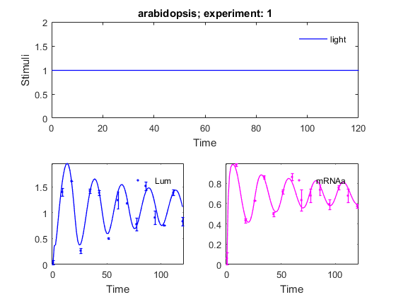 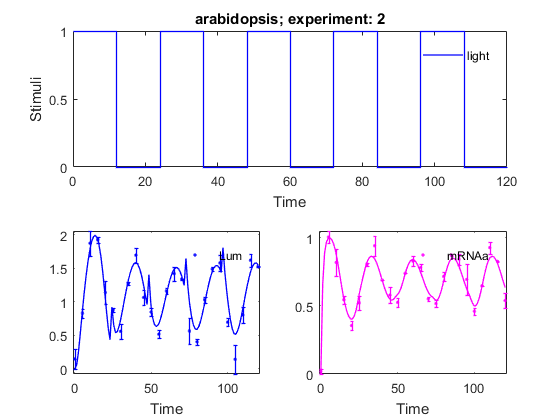 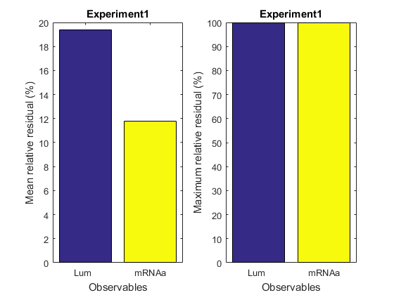 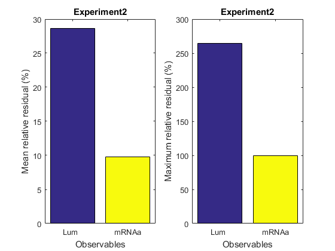 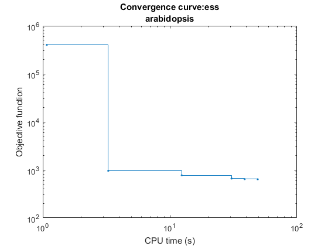 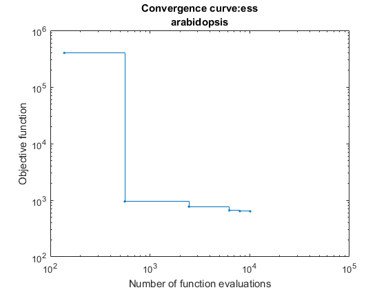 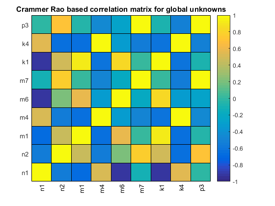 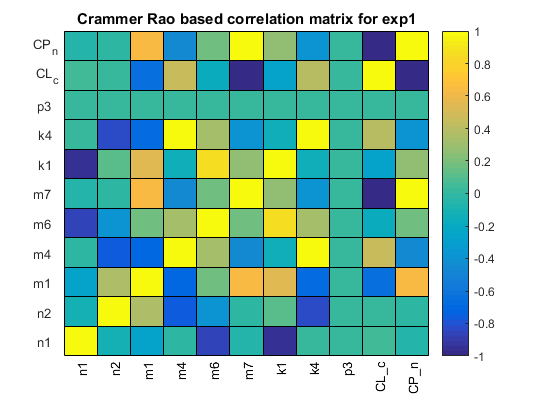 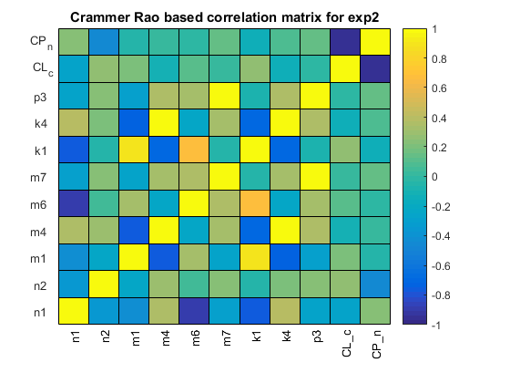 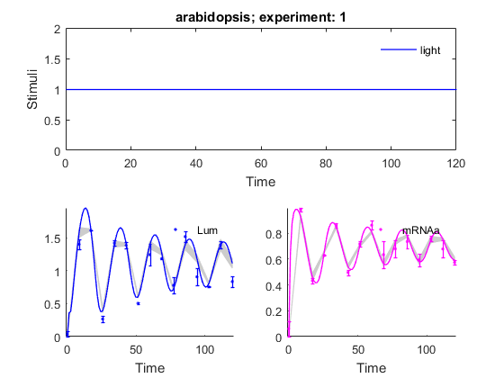 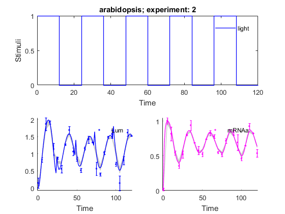 See also
References
Model was taken from:
Locke J.C.W; A.J. Millar; M.S. Turner. Modelling genetic networks with noisy and varied experimental data: the circadian clock in Arabidopsis thaliana. J Theor Biol,2005, 234:383-393.
Paremeter estimation problem formulation and solvers
Moles, C. G., Pedro Mendes and Julio R. Banga. Parameter estimation in biochemical pathways: a comparison of global optimization methods. Genome Research 2003, 13(11):2467-2474.
E Balsa-Canto, AA Alonso, JR Banga. An iterative identification procedure for dynamic modeling of biochemical networks. BMC Systems Biology 2010, 4 (1), 11.
Egea JA, Henriques D, Cokelaer T, Villaverde AF, MacNamara A, Danciu DP, Banga JR and Saez-Rodriguez J MEIGO: an open-source software suite based on metaheuristics for global optimization in systems biology and bioinformatics. BMC Bioinformatics 2014, 15:136.
AMIGO_htmldoc_inputs(inputs,fullfile(pwd,'html','parestex1local.html'));